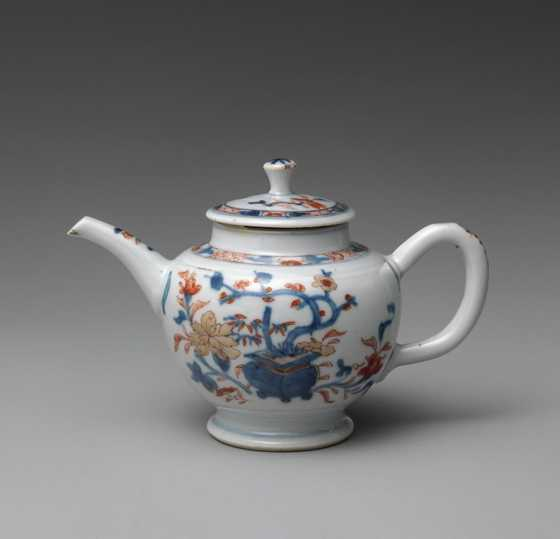
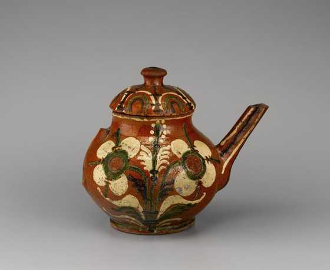
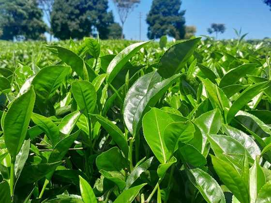
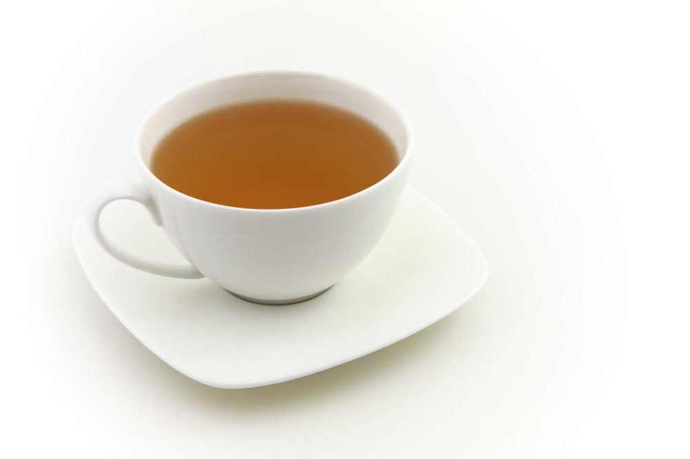
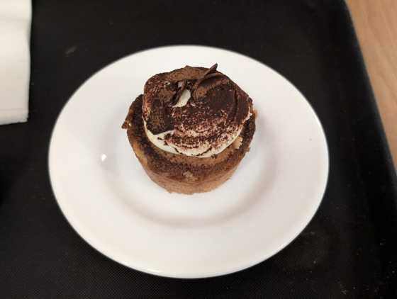
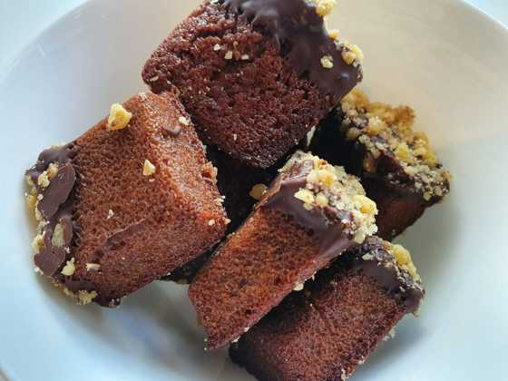
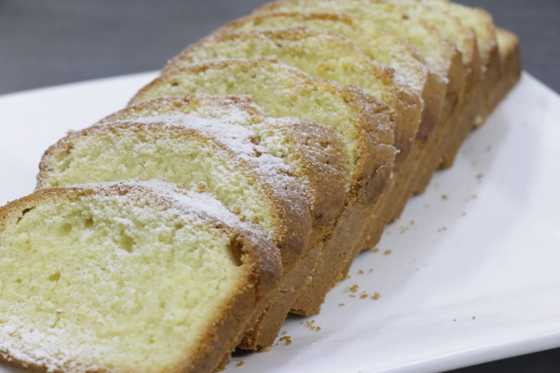
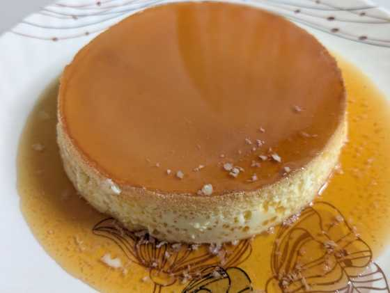

お店について
紹介記事によると、カフェ Ｔ’ｓ(ティーズ)は、白山市柴木の閑静な住宅街にある一軒家のカフェサロンです。国道157号から少し入った場所にあり、黄色い大きな扉が目印とされています。
ご両親が暮らしていた家を改装したとされ、アンティークの家具や、海外で集められたカップ・雑貨が並ぶと紹介されています。
ラジオパーソナリティとしても活動するオーナーが、「幅広い年代やジャンルの方々が出会える場があったら」との思いから開いたお店だと伝えられています。紅茶とスイーツでおもてなしをし、レンタルスペースでは展示会やワークショップなども開かれていると紹介されています。
※お店の由来・理念は、公開されている紹介記事・ブログの内容にもとづきます。店名「Ｔ」の意味は確認できていないため、記載していません。内容は取材前の情報です。





メニュー
紹介記事では、世界各国から選んだ紅茶(単一農園の茶葉のものなど)と、週替わりのケーキが中心と紹介されています。実際の品目・価格は変わる場合があるため、ここでは「準備中」とし、写真はイメージです。
- 紅茶
- 世界各国の紅茶(品目・価格は準備中)
- ケーキ・焼き菓子
- 週替わり(品目・価格は準備中)
- 営業時間・定休日
- 準備中








口コミ(イメージ例)
以下は制作側が作成したイメージ例で、実際のお客様の声ではありません。
イメージ例住宅街の細い道を入って、黄色い扉を開けると、ふっと肩の力が抜けるような空間でした。紅茶をゆっくり味わえます。
イメージ例ポットで運ばれてくる紅茶と、ケーキの組み合わせを選ぶのが楽しい時間です。友人との会話も弾みます。
イメージ例アンティークのカップや家具を眺めているだけで、旅行に来たような気分になれます。静かに過ごしたい日におすすめです。
アクセス
- 所在地
- 〒920-2164 石川県白山市柴木２丁目１０４
- 電話
- 準備中
- 営業時間・定休日
- 準備中
- @cafe2021ts